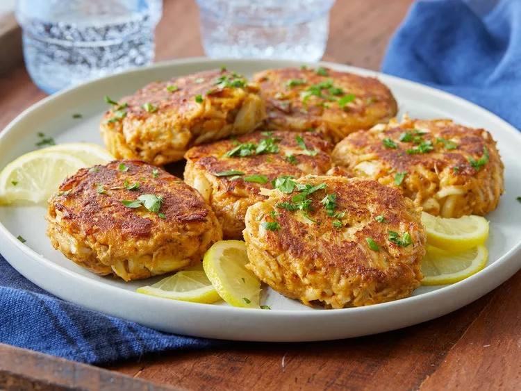

Maryland Crab Cakes Recipe

Crabs made into cakes? What's not to love?
These Maryland crab cakes are authentic.
Growing up near the Chesapeake Bay, you learn that crabs are
as valuable as gold. My mom made crab cakes every Friday in
the summer, but I like my recipe just a tad better.
Don't tell Mom.
Ingredients
- 1 pound crabmeat
- 2 slices white bread, crusts trimmed
- 1 large egg, beaten
- 1 tablespoon Old Bay Seasoning
- 1 tablespoon mayonnaise
- 1 teaspoon Dijon-style prepared mustard
- 1 teaspoon Worcestershire sauce
- 2 tablespoons butter
Steps
- Place crab meat in a large bowl and remove any remaining shell pieces.
- Break bread into small pieces and add to crab meat. Add beaten egg, Old Bay seasoning, mayonnaise, mustard, and Worcestershire sauce to the bowl. Mix by hand to avoid overworking crab meat; you want to keep the lumps of meat as much as possible. Form into 6 patties.
- Heat butter in a skillet over medium heat.
- Fry patties in hot butter until golden brown, about 4 minutes per side.
See more recipes